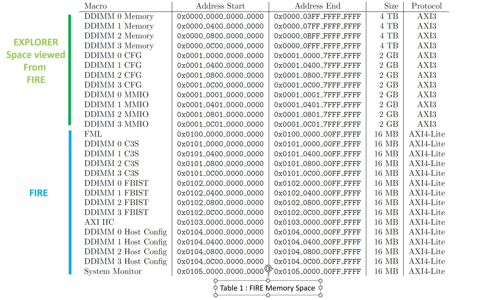

OMI ENABLEMENT DETAILS
OMI Host / FIRE memory mapping and Access
a. Memory mapping The host offers 2 types of accesses.
First of them deals with its own internal registers. Most used among them are:
- FML (FIRE Miscellaneous Library) containing mainly the Fire version and the reset of the devices
- C3S (OpenCAPI Command and Configure Sequencer) used to manually create an OMI frame (called flit)
- FBIST (Function Built-In Self Test) used to automatically generate and check high bandwidth traffic on the OMI links.
The host can also access all memory mapping of the DDIMM devices (up to 4 devices)

Table 1: FIRE memory space
Example of FIRE internal register
i. Read FIRE_VERSION in register @0x00 of FML Group
python3 omi.py read -c fire -r 0x100000000000000
Rd Fire Addr 0x100000000000000 : 0x000000003e29c7d2
This register contains
- [31:29]: ‘001’: frequency used for the internal clock of the FPGA which determines the OMI link frequency [ 1= 21.33 GBPS, 2 =23.46 GBPS, 3=25.6 GBPS]
- [28]: ‘1’: dirty bit is used when the current image contains change not committed to the git version control
- [27:0]: ‘29c7d2’ is the git level of the code
ii. Reset/unreset the DDIMM0 device
Reseting the DDIMMs is performed by the host.
python3 omi.py read -c fire -r 0x100000000000004
Rd Fire Addr 0x100000000000004 : 0x000000000000003f
Reset the DDIMM0 (bit3)
python3 omi.py write -c fire -r 0x100000000000004 -d 000000037
Wr Fire Addr 0x100000000000004 : 0x0000000000000037
Writing check : Success
python3 omi.py write -c fire -r 0x100000000000004 -d 000000037
Wr Fire Addr 0x100000000000004 : 0x000000000000003f
Writing check : Success
iii. Bad address access
As soon as a bad i2C address is accessed, you may encounter one of the 4 different types of error answer:
The answer “dec0de1c” will be sent by AMD/Xilinx AXI crossbar as an answer to an unknown address (out of range, as defined for example in axi_regs_32.vhdl
python3 omi.py read -c fire -r 0x1000F0000000004
Rd Fire Addr 0x1000f0000000004 : 0x00000000dec0de1c
The answer “dec0deff” will be sent as an answer to address that is not modulo 4.
~/python/v6 $ python3 omi.py read -c fire -r 0x100000000000000
Rd Fire Addr 0x100000000000000 : 0x00000000335b5587
~/python/v6 $ python3 omi.py read -c fire -r 0x100000000000001
Rd Fire Addr 0x100000000000001 : 0x00000000dec0deff
~/python/v6 $ python3 omi.py read -c fire -r 0x100000000000002
Rd Fire Addr 0x100000000000002 : 0x00000000dec0deff
~/python/v6 $ python3 omi.py read -c fire -r 0x100000000000003
Rd Fire Addr 0x100000000000003 : 0x00000000dec0deff
~/python/v6 $ python3 omi.py read -c fire -r 0x100000000000004
Rd Fire Addr 0x100000000000004 : 0x000000000000003f
The answer “dec0de00” will be sent as an answer to a register address that the hardware has not preset.
~/python/v6 $ python3 omi.py read -c fire -r 0x101000000030008
Rd Fire Addr 0x101000000030008 : 0x00000000dec0de00
The answer “dec0de0b” will be sent as an answer to an address existing in the AXI range definition, but the hardware doesn't handle.
~/python/v6 $ python3 omi.py read -c fire -r 0x101000000030040
Rd Fire Addr 0x101000000030040 : 0x00000000dec0de0b
In the event you have modified the hdl design and not properly taken care of a memory range, an I2C error will be raised, and a reset of the fire chip will be needed if you access a bad address in an unallowed range!
python3 omi.py read -c fire -r 0x<in range but not answering address>
OSError: [Errno 5] Input/output error
Note: When this occurs a reset of the chip is required.
OMI Device DDIMM OCMB memory mapping and access
Contact Microchip support to obtain detailed information on firmware
Following propositions are only examples provided to help the discovery of OMI technology.
a. Memory mapping
An EXPLORER register can be accessed in two ways:
- Directly through I2C. The user will need to select the port of the DDIMM to switch the I2C path to the EXPLORER he wants to access
- Indirectly through FIRE. The OMI links between FIRE and EXPLORER need to be trained to use the “in-band” access. To select the EXPLORER register he wants to access, the user will use a specific address depending on the port number.
Each EXPLORER register can be accessed through different addresses.
The reference used is the Microchip "Explorer_registers_Mips_view.pdf" document.
The 0x808xxxx registers are ordered by pair but can be accessed alone or by pair.
As an example, let’s access the register 0x8084168: OCMB - MB_SIM_MMIO_OTRCFG76_LEFT and 0x808416C: OCMB - MB_SIM_MMIO_OTRCFG76_RIGHT.
They can be accessed either by their « register address », by their « SCOM address », by their « MMIO address » or by their « FIRE adress »:
- Register Address : @0x08084168 and @0x0808416C (32 bits access)
- I2C Register Address : @0xA8084168 and @0xA808416C (32 bits access)
- SCOM Address: Reg@0x8084168/C >> 3 => SCOM@ 0x801082D (64 bits access)
- MMIO Address: Reg@8084168/C => MMIO@ @0026C/8 (32 bits access)
- FIRE Address: => 0x3001000140084168 (64 bits access)
To access different slots through FIRE, use the appropriate offset:
- DDIM_0_CFG / Port A: 0x3001_0001_4008_4168
- DDIM_1_CFG / Port B: 0x3001_0401_4008_4168
b. Registers access
i. I2C access (at any time and directly in EXPLORER chip)
DDIMM / Port is selected by the I2C switch on the Tormem adapter board
python3 omi.py initpath -d a #(done once to select the right OMI DDIMM / Port)
MB_SIM_MMIO_OTRCFG76_LEFT + MB_SIM_MMIO_OTRCFG76_RIGHT 64 bits Read SCOM@ @801082D => 0x0000000f_00000000
python3 omi.py read -c exp -r 0801082D => 0x0000000f00000000
64 bits Write SCOM@ @801082D => 0x000000ff_00000000
python3 omi.py write -c exp -r 0801082D -d 0x0000ff00000000
MB_SIM_MMIO_OTRCFG76_LEFT => Reg @0x8084168 I2C Reg @0xA8084168 = SCOM @0801082D 32 bits Read Reg@ @0x8084168 => 0000000F
python3 omi.py readreg -c exp -r 0x8084168 =>0x0000000F
32 bits Write Reg@ @0x8084168 => 000000FF (always start by lower address pair and then upper address pair)
python3 omi.py writereg -c exp -r 0x8084168 -d 0x000000FF
MB_SIM_MMIO_OTRCFG76_RIGHT => Reg @0x808416C = I2C Reg @0xA808416C = SCOM @0801082D 32 bits Read Reg@ @0x808416C => 00000000
python3 omi.py readreg -c exp -r 0x808416C => 0x00000000
32 bits Write Reg@ @0x808416C => 000000AA (always start by lower address pair and then upper address pair)
python3 omi.py writereg -c exp -r 0x808416C -d 0x000000AA
ii. In-Band access using the FIRE DDIMM_0 MMIO register address
(access is done through FIRE only after OMI Links are trained) DDIMM / Port is selected by the address used
DDIM_0_MMIO / Port A: 0x3001_0001_4008_4168
DDIM_1_MMIO / Port B: 0x3001_0401_4008_4168 MB_SIM_MMIO_O0MBIT_O0DID_LEFT + MB_SIM_MMIO_O0MBIT_O0DID_RIGHT 64 bits Read Reg@ @08084168 => 0x00000f_00000000
64 bits Write Reg@ @08084168 => 0x0000ff_00000000
python3 omi.py read -c fire -r 0x3001000140084168 => 0x0000000f00000000
64 bits Write Reg@ @08084168 => 0x0000ff_00000000
MB_SIM_MMIO_OTRCFG76_LEFT => MMIO @0026C = Reg @0x8084168 = SCOM @0801082D 32 bits Read MMIO@ @0026C => 0000000F
32 bits Write MMIO@ @0026C => 000000FF
python3 omi.py read -c fire -r 0x200100000000026c => 0x000000000000000f
32 bits Write MMIO@ @0026C => 000000FF
python3 omi.py write -c fire -r 0x3001000140084168 -d 0x000000ff00000000
MB_SIM_MMIO_OTRCFG76_LEFT => MMIO @0026C = Reg @0x8084168 = SCOM @0801082D 32 bits Read MMIO@ @0026C => 0000000F python3 omi.py read -c fire -r 0x200100000000026c => 0x000000000000000f 32 bits Write MMIO@ @0026C => 000000FF
MB_SIM_MMIO_OTRCFG76_RIGHT => MMIO @00268 = Reg @0x808416C = SCOM @0801082D 32 bits Read MMIO@ @00268 => 00000000
python3 omi.py write -c fire -r 0x200100000000026c -d 0x000000ff
MB_SIM_MMIO_OTRCFG76_RIGHT => MMIO @00268 = Reg @0x808416C = SCOM @0801082D 32 bits Read MMIO@ @00268 => 00000000
32 bits Write MMIO@ @00268 => 00000000
python3 omi.py read -c fire -r 0x2001000000000268 => 0x0000000000000000
32 bits Write MMIO@ @00268 => 00000000
Notice the address swap with 32 bits access! MMIO @0026C => Reg @0x8084168
python3 omi.py write -c fire -r 0x2001000000000268 -d 0x00000000
Notice the address swap with 32 bits access! MMIO @0026C => Reg @0x8084168
iii. In-Band access using C3S to manually build a Flit
(access is done through Fire only after OMI Links are trained) Pre-requisite => Only template 0 is allowed.
32 bits Read MMIO@ @0026C => FADAFAAB Control array => C3S RESP WRITE ADDR RESET
python3 omi.py read -c fire -r 0x2001000000000224 => 0x00000221
python3 omi.py write -c fire -r 0x2001000000000224 -d 0x00000001
32 bits Read MMIO@ @0026C => FADAFAAB Control array => C3S RESP WRITE ADDR RESET
Data array
python3 omi.py write -c fire -r 0x0101000000030004 -d 0x0000000000000200
Data array
Flow Array
python3 omi.py write -c fire -r 0x010100000000000E -d 0x0000000000000000
python3 omi.py write -c fire -r 0x0101000000000006 -d 0x0000000040000000
python3 omi.py write -c fire -r 0x0101000000000005 -d 0x0000000000000000
python3 omi.py write -c fire -r 0x0101000000000004 -d 0x000000000026C000
python3 omi.py write -c fire -r 0x0101000000000003 -d 0x0000000000E00000
Flow Array
Control Array
python3 omi.py write -c fire -r 0x0101000000020000 -d 0x0000000080000001
python3 omi.py write -c fire -r 0x0101000000020100 -d 0x0000000000000100
Control Array
Response Array to access 0x26C~64/4=B, read 1020B
python3 omi.py read -c fire -r 0x0101000000030000 => 0x0000000000000008
python3 omi.py write -c fire -r 0x0101000000030000 -d 0x0000000000000009
python3 omi.py read -c fire -r 0x0101000000030000 => 0x0000000000000008
python3 omi.py read -c fire -r 0x0101000000030000 => 0x0000000000000008
python3 omi.py write -c fire -r 0x0101000000030000 -d 0x000000000000000A
Response Array to access 0x26C~64/4=B, read 1020B
32 bits Write MMIO@ @0026C => ABCDEFAA
python3 omi.py read -c fire -r 0x010100000001020B => 0x00000000FADAFAAB
32 bits Write MMIO@ @0026C => ABCDEFAA
Flow Array
Data Array
python3 omi.py write -c fire -r 0x010100000000000E -d 0x0000000000000001
python3 omi.py write -c fire -r 0x0101000000000006 -d 0x0000000040000000
python3 omi.py write -c fire -r 0x0101000000000005 -d 0x0000000000000000
python3 omi.py write -c fire -r 0x0101000000000004 -d 0x000000000026C000
python3 omi.py write -c fire -r 0x0101000000000003 -d 0x0000000000E10000
Flow Array
Control Array
python3 omi.py write -c fire -r 0x0101000000020000 -d 0x0000000080000001
python3 omi.py write -c fire -r 0x010100000000010B -d 0x00000000ABCDEFAA
python3 omi.py write -c fire -r 0x0101000000020100 -d 0x0000000080000002
python3 omi.py write -c fire -r 0x0101000000020200 -d 0x0000000080000003
python3 omi.py write -c fire -r 0x0101000000020300 -d 0x0000000000000100
Control Array
Reassign default value for supported templates python3 omi.py write -c fire -r 0x2001000000000224 -d 0x00000221
python3 omi.py read -c fire -r 0x0101000000030000 => 0x0000000000000008
python3 omi.py write -c fire -r 0x0101000000030000 -d 0x0000000000000009
python3 omi.py read -c fire -r 0x0101000000030000 => 0x0000000000000008
python3 omi.py read -c fire -r 0x0101000000030000 => 0x0000000000000008
python3 omi.py write -c fire -r 0x0101000000030000 -d 0x000000000000000A
Reassign default value for supported templates python3 omi.py write -c fire -r 0x2001000000000224 -d 0x00000221